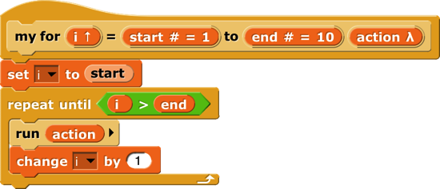
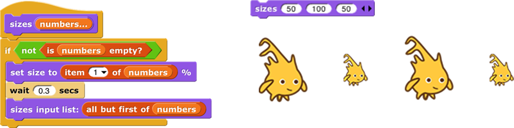

6 Procedures as Data
Call and Run
In the for block example above, the input named action has been declared as type “Command (C-shaped)”; that’s why the finished block is C-shaped. But how does the block actually tell Snap! to carry out the commands inside the C-slot? Here is a simple version of the block script:

This is simplified because it assumes, without checking, that the ending value is greater than the starting value; if not, the block should (depending on the designer’s purposes) either not run at all, or change the variable by −1 for each repetition instead of by 1.
The important part of this script is the run block near the end. This is a Snap! built-in command block that takes a Command-type value (a script) as its input, and carries out its instructions. (In this example, the value of the input  is the script that the user puts in the C-slot of the my for block.) There is a similar call reporter block for invoking a Reporter or Predicate block. The call and run blocks are at the heart of Snap!’s first class procedure feature; they allow scripts and blocks to be used as data—in this example, as an input to a block—and eventually carried out under control of the user’s program.
is the script that the user puts in the C-slot of the my for block.) There is a similar call reporter block for invoking a Reporter or Predicate block. The call and run blocks are at the heart of Snap!’s first class procedure feature; they allow scripts and blocks to be used as data—in this example, as an input to a block—and eventually carried out under control of the user’s program.
Here’s another example, this time using a Reporter-type input in a map block (see page 50):

Here we are calling the Reporter “multiply by 10” three times, once with each item of the given list as its input, and collecting the results as a list. (The reported list will always be the same length as the input list.) Note that the multiplication block has two inputs, but here we have specified a particular value for one of them (10), so the call block knows to use the input value given to it just to fill the other (empty) input slot in the multiplication block. In the my map definition, the input function is declared to be type Reporter, and data is of type List.
Call/Run with inputs
The call block (like the run block) has a right arrowhead at the end; clicking on it adds the phrase “with inputs” and then a slot into which an input can be inserted:

If the left arrowhead is used to remove the last input slot, the “with inputs ” disappears also. The right arrowhead can be clicked as many times as needed for the number of inputs required by the reporter block being called.
If the number of inputs given to call (not counting the Reporter-type input that comes first) is the same as the number of empty input slots , then the empty slots are filled from left to right with the given input values. If call is given exactly one input, then every empty input slot of the called block is filled with the same value:

If the number of inputs provided is neither one nor the number of empty slots, then there is no automatic filling of empty slots. (Instead you must use explicit parameters in the ring, as discussed in Section C below.)
An even more important thing to notice about these examples is the ring around the Reporter-type input slots in call and map above. This notation indicates that the block itself, not the number or other value that the block would report when called, is the input. If you want to use a block itself in a non-Reporter-type (e.g., Any-type) input slot, you can enclose it explicitly in a ring, found at the top of the Operators palette.

As a shortcut, if you right-click or control-click on a block (such as the + block in this example), one of the choices in the menu that appears is “ringify ” and/or “unringify .” The ring indicating a Reporter-type or Predicate-type input slot is essentially the same idea for reporters as the C-shaped input slot with which you’re already familiar; with a C-shaped slot, it’s the script you put in the slot that becomes the input to the C-shaped block.
There are three ring shapes. All are oval on the outside, indicating that the ring reports a value, the block or script inside it, but the inside shapes are command, reporter, or predicate, indicating what kind of block or script is expected. Sometimes you want to put something more complicated than a single reporter inside a reporter ring; if so, you can use a script, but the script must report a value, as in a custom reporter definition.
Variables in Ring Slots
Note that the run block in the definition of the my for block (page 65) doesn’t have a ring around its input variable action. When you drag a variable into a ringed input slot, you generally do want to use the value of the variable, which will be the block or script you’re trying to run or call, rather than the orange variable reporter itself. So Snap! automatically removes the ring in this case. If you ever do want to use the variable block itself, rather than the value of the variable, as a Procedure-type input, you can drag the variable into the input slot, then control-click or right-click it and choose “ringify” from the menu that appears. (Similarly, if you ever want to call a function that will report a block to use as the input, such as item 1 of applied to a list of blocks, you can choose “unringify” from the menu. Almost all the time, though, Snap! does what you mean without help.)
Writing Higher Order Procedures
A higher order procedure is one that takes another procedure as an input, or that reports a procedure. In this document, the word “procedure ” encompasses scripts, individual blocks, and nested reporters. (Unless specified otherwise, “reporter” includes predicates. When the word is capitalized inside a sentence, it means specifically oval-shaped blocks. So, “nested reporters” includes predicates, but “a Reporter-type input” doesn’t.)
Although an Any-type input slot (what you get if you use the small input-name dialog box) will accept a procedure input, it doesn’t automatically ring the input as described above. So the declaration of Procedure-type inputs makes the use of your custom higher order block much more convenient.
Why would you want a block to take a procedure as input? This is actually not an obscure thing to do; the primitive conditional and looping blocks (the C-shaped ones in the Control palette) take a script as input. Users just don’t usually think about it in those terms! We could write the repeat block as a custom block this way, if Snap! didn’t already have one:

The lambda (λ) next to action in the prototype indicates that this is a C-shaped block , and that the script enclosed by the C when the block is used is the input named action in the body of the script. The only way to make sense of the variable action is to understand that its value is a script.
To declare an input to be Procedure-type, open the input name dialog as usual, and click on the arrowhead:

Then, in the long dialog, choose the appropriate Procedure type. The third row of input types has a ring in the shape of each block type (jigsaw for Commands, oval for Reporters, and hexagonal for Predicates). In practice, though, in the case of Commands it’s more common to choose the C-shaped slot on the fourth row, because this “container” for command scripts is familiar to Scratch users. Technically the C-shaped slot is an unevaluated procedure type, something discussed in Section E below. The two Command-related input types (inline and C-shaped) are connected by the fact that if a variable, an item (#) of [list] block, or a custom Reporter block is dropped onto a C-shaped slot of a custom block, it turns into an inline slot, as in the repeater block’s recursive call above. (Other built-in Reporters can’t report scripts, so they aren’t accepted in a C-shaped slot.)

Why would you ever choose an inline Command slot rather than a C shape? Other than the run block discussed below, the only case I can think of is something like the C /C++/Java for loop, which actually has three command script inputs (and one predicate input), only one of which is the “featured” loop body:

Okay, now that we have procedures as inputs to our blocks, how do we use them? We use the blocks run (for commands) and call (for reporters). The run block’s script input is an inline ring, not C-shaped, because we anticipate that it will be rare to use a specific, literal script as the input. Instead, the input will generally be a variable whose value is a script.
The run and call blocks have arrowheads at the end that can be used to open slots for inputs to the called procedures. How does Snap! know where to use those inputs? If the called procedure (block or script) has empty input slots, Snap! “does the right thing.” This has several possible meanings:
- If the number of empty slots is exactly equal to the number of inputs provided, then Snap! fills the empty slots from left to right:

- If exactly one input is provided, Snap! will fill any number of empty slots with it:

- Otherwise, Snap! won’t fill any slots, because the user’s intention is unclear.
If the user wants to override these rules, the solution is to use a ring with explicit input names that can be put into the given block or script to indicate how inputs are to be used. This will be discussed more fully below.
Recursive Calls to Multiple-Input Blocks
A relatively rare situation not yet considered here is the case of a recursive block that has a variable number of inputs. Let’s say the user of your project calls your block with five inputs one time, and 87 inputs another time. How do you write the recursive call to your block when you don’t know how many inputs to give it? The answer is that you collect the inputs in a list (recall that, when you declare an input name to represent a variable number of inputs, your block sees those inputs as a list of values in the first place), and then, in the recursive call, you drop that input list onto the arrowheads that indicate a variable-input slot , rather than onto the input slot:

Note that the halo you see while dragging onto the arrowheads is red instead of white, and covers the input slot as well as the arrowheads. And when you drop the expression onto the arrowheads, the words “input list :” are added to the block text and the arrowheads disappear (in this invocation only) to remind you that the list represents all of the multiple inputs, not just a single input. The items in the list are taken individually as inputs to the script. Since numbers is a list of numbers, each individual item is a number, just what sizes wants. This block will take any number of numbers as inputs, and will make the sprite grow and shrink accordingly:

The user of this block calls it with any number of individual numbers as inputs. But inside the definition of the block, all of those numbers form a list that has a single input name, numbers. This recursive definition first checks to make sure there are any inputs at all. If so, it processes the first input (item 1 of the list), then it wants to make a recursive call with all but the first number. But sizes doesn’t take a list as input; it takes numbers as inputs! So this would be wrong:

Formal Parameters
The rings around Procedure-type inputs have an arrowhead at the right. Clicking the arrowhead allows you to give the inputs to a block or script explicit names , instead of using empty input slots as we’ve done until now.

The names #1 , #2, etc. are provided by default, but you can change a name by clicking on its orange oval in the input names list. Be careful not to drag the oval when clicking; that’s how you use the input inside the ring. The names of the input variables are called the formal parameters of the encapsulated procedure.
Here’s a simple but contrived example using explicit names to control which input goes where inside the ring:

Here we just want to put one of the inputs into two different slots. If we left all three slots empty, Snap! would not fill any of them, because the number of inputs provided (2) would not match the number of empty slots (3).
Here is a more realistic, much more advanced example : 

This is the definition of a block that takes any number of lists, and reports the list of all possible combinations of one item from each list. The important part for this discussion is that near the bottom there are two nested calls to map, the higher order function that applies an input function to each item of an input list. In the inner block, the function being mapped is in front of, and that block takes two inputs. The second, the empty List-type slot, will get its value in each call from an item of the inner map’s list input. But there is no way for the outer map to communicate values to empty slots of the in front of block. We must give an explicit name, newitem, to the value that the outer map is giving to the inner one, then drag that variable into the in front of block.
By the way, once the called block provides names for its inputs, Snap! will not automatically fill empty slots , on the theory that the user has taken control. In fact, that’s another reason you might want to name the inputs explicitly: to stop Snap! from filling a slot that should really remain empty.
Procedures as Data
Here’s an example of a situation in which a procedure must be explicitly marked as data by pulling a ring from the Operators palette and putting the procedure (block or script) inside it:

Here, we are making a list of procedures . But the list block accepts inputs of any type, so its input slots are not ringed. We must say explicitly that we want the block itself as the input, rather than whatever value would result from evaluating the block.
Besides the list block in the example above, other blocks into which you may want to put procedures are set (to set the value of a variable to a procedure), say and think (to display a procedure to the user), and report (for a reporter that reports a procedure):

Special Forms
The primitive if else block has two C-shaped command slots and chooses one or the other depending on a Boolean test. Because Scratch doesn’t emphasize functional programming, it lacks a corresponding reporter block to choose between two expressions. Snap! has one, but we could write our own:


Our block works for these simple examples, but if we try to use it in writing a recursive operator , it’ll fail:

The problem is that when any block is called, all of its inputs are computed (evaluated) before the block itself runs. The block itself knows only the values of its inputs, not what expressions were used to compute them. In particular, all of the inputs to our if then else block are evaluated first thing. That means that even in the base case, factorial will try to call itself recursively, causing an infinite loop. We need our if then else block to be able to select only one of the two alternatives to be evaluated.
We have a mechanism to allow that: declare the then and else inputs to be of type Reporter rather than type Any. Then, when calling the block, those inputs will be enclosed in a ring so that the expressions themselves, rather than their values, become the inputs:


In this version, the program works, with no infinite loop. But we’ve paid a heavy price: this reporter-if is no longer as intuitively obvious as the Scratch command-if. You have to know about procedures as data, about rings, and about a trick to get a constant value in a ringed slot . (The id block implements the identity function , which reports its input.[6] We need it because rings take only reporters as input, not numbers.) What we’d like is a reporter-if that behaves like this one, delaying the evaluation of its inputs, but looks like our first version, which was easy to use except that it didn’t work.
Such blocks are indeed possible. A block that seems to take a simple expression as input, but delays the evaluation of that input by wrapping an “invisible ring” around it (and, if necessary, an id-like transformation of constant data into constant functions) is called a special form . To turn our if block into a special form, we edit the block’s prototype, declaring the inputs yes and no to be of type “Any (unevaluated) ” instead of type Reporter. The script for the block is still that of the second version, including the use of call to evaluate either yes or no but not both. But the slots appear as white Any-type rectangles, not Reporter-type rings, and the factorial block will look like our first attempt.
In a special form’s prototype, the unevaluated input slot(s) are indicated by a lambda (λ) next to the input name, just as if they were declared as Procedure type . They are Procedure type, really; they’re just disguised to the user of the block.
Special forms trade off implementor sophistication for user sophistication. That is, you have to understand all about procedures as data to make sense of the special form implementation of my if then else. But any experienced Scratch programmer can use my if then else without thinking at all about how it works internally.
Special Forms in Scratch
Special forms are actually not a new invention in Snap!. Many of Scratch’s conditional and looping blocks are really special forms. The hexagonal input slot in the if block is a straightforward Boolean value, because the value can be computed once, before the if block makes its decision about whether or not to run its action input. But the forever if, repeat until, and wait until blocks’ inputs can’t be Booleans; they have to be of type “Boolean (unevaluated) ,” so that Scratch can evaluate them over and over again. Since Scratch doesn’t have custom C‑shaped blocks, it can afford to handwave away the distinction between evaluated and unevaluated Booleans, but Snap! can’t. The pedagogic value of special forms is proven by the fact that no Scratcher ever notices that there’s anything strange about the way in which the hexagonal inputs in the Control blocks are evaluated.
Also, the C-shaped slot familiar to Scratch users is an unevaluated procedure type; you don’t have to use a ring to keep the commands in the C-slot from being run before the C-shaped block is run. Those commands themselves, not the result of running them, are the input to the C-shaped Control block. (This is taken for granted by Scratch users, especially because Scratchers don’t think of the contents of a C-slot as an input at all.) This is why it makes sense that “C‑shaped” is on the fourth row of types in the long form input dialog, with other unevaluated types.